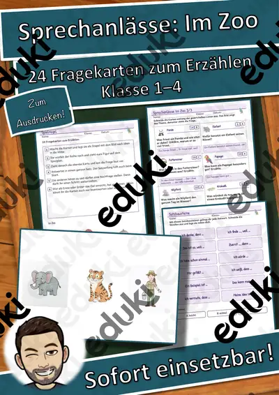
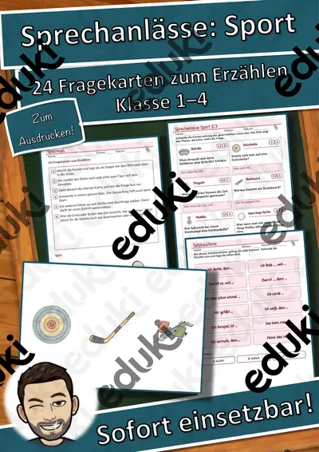

Materialpaket Sprechanlässe Grundschule Klasse 1–4 – Ich und Alltag: 6 Themen, dreifach differenziert, mit Musterantworten
6 Sprechanlass-Sets für die Grundschule (Klasse 1–4) – im Paket zum halben PreisDu suchst fertig vorbereitetes Material, das ohne Kopieraufwand sofort einsetzbar ist? Dieses Paket bündelt 6 Themen der Reihe Sprechanlässe zum Bereich „Ich und Alltag“. Alle Hefte sind gleich aufgebaut: Die Kinder kennen den Ablauf nach dem ersten Mal und arbeiten selbstständig, du sparst Vorbereitungszeit und hast durchgängig dieselbe Qualität.
Preisvorteil und Zeitersparnis: Einzeln gekauft kosten die 6 Materialien regulär zusammen 18,94 €. Im Paket zahlst du nur 9,47 € und sparst damit rund 50 %. Dazu sparst du dir das Zusammensuchen und Abstimmen: Alles passt schon zusammen, ist sofort einsetzbar und liegt in einem Download bereit. Alle Materialien sind sorgfältig gearbeitet, vom Autor geprüft und enthalten Musterantworten, sodass du dir auch die Korrektur-Vorbereitung sparst.
Die 6 Materialien im Paket
Familie: Sprechen und Zuhören, Erzählkreis, Freiarbeit, Stationenarbeit, Vertretungsstunde und Sprachförderung.
Schule und Klassenzimmer: Sprechen und Zuhören, Erzählkreis, Freiarbeit, Stationenarbeit, Vertretungsstunde und Sprachförderung.
Hobbys: Sprechen und Zuhören, Erzählkreis, Freiarbeit, Stationenarbeit, Vertretungsstunde und Sprachförderung.
Kleidung: Sprechen und Zuhören, Erzählkreis, Freiarbeit, Stationenarbeit, Vertretungsstunde und Sprachförderung.
Körper und Sinne: Sprechen und Zuhören, Erzählkreis, Freiarbeit, Stationenarbeit, Vertretungsstunde und Sprachförderung.
Sport: Sprechen und Zuhören, Erzählkreis, Freiarbeit, Stationenarbeit, Vertretungsstunde und Sprachförderung.
Lehrplanbezug (LehrplanPLUS Bayern, Grundschule, Deutsch, Jahrgangsstufen 1 bis 4)Sprechen und Zuhören: Zu jedem Bild eine Frage oder ein Sprechimpuls in drei Stufen: zu Erlebnissen erzählen, Fragen beantworten, Satzanfänge als Starthilfe nutzen, anderen zuhören.
Sprache und Sprachgebrauch untersuchen: Satzbausteine und Wortschatz zum Thema erweitern und im Gespräch anwenden; auch für Kinder mit Deutsch als Zweitsprache geeignet.
Lesen – mit Texten und Medien umgehen: Fragekarten und Spielplan sinnentnehmend lesen.
So sind die Hefte aufgebautZu jedem Bild gehört eine Frage oder ein Sprechimpuls in drei Schwierigkeitsstufen, dazu ein Satzanfang als Starthilfe.
Jedes Thema ist ein eigenes, vollständiges Set mit Spielregel, Spielplan zum Würfeln, Satzbausteinen, Blanko-Karten und Musterantworten.
Insgesamt umfasst das Paket 84 Seiten.
Einsatzmöglichkeiten
Die Materialien eignen sich für Sprechen und Zuhören, Sprachförderung, Erzählkreis, Partnerarbeit und Vertretungsstunde.
Viel Freude mit deiner Klasse wünscht dir Snice!
Ähnliche Materialien

Materialpaket Sprechanlässe Grundschule Klasse 1–4 – Tiere und Natur: 7 Themen, dreifach differenziert, mit Musterantworten

Materialpaket Sprechanlässe Grundschule Klasse 1–4 – Orte und Umwelt: 3 Themen, dreifach differenziert, mit Musterantworten

Materialpaket Sprechanlässe Grundschule Klasse 1–4 – Essen und Einkaufen: 3 Themen, dreifach differenziert, mit Musterantworten

Materialpaket Sprechanlässe Grundschule Klasse 1–4 – Jahreszeiten und Feste: 5 Themen, dreifach differenziert, mit Musterantworten

Materialpaket Sprechanlässe Grundschule Klasse 1–4 – Fantasie und Abenteuer: 5 Themen, dreifach differenziert, mit Musterantworten

Sprechanlässe: Familie – Sprechanlässe – Klasse 1–4

Sprechanlässe: Im Zoo – Sprechanlässe – Klasse 1–4
